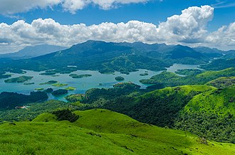
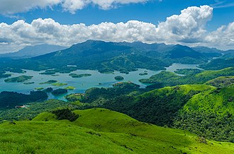

About
Kerala is a state on the Malabar Coast of India. The state is situated between Arabian Sea to the west and Western Ghats mountain ranges to the east. Kerala was named by TIME magazine in 2022 among the 50 extraordinary destinations to explore in its list of the World's Greatest Places.
With 33 million inhabitants as per the 2011 census, Kerala is the 13th-largest Indian state by population. It is divided into 14 districts with the capital being Thiruvananthapuram. Malayalam is the most widely spoken language and is also the official language of the state while a major chunk of the population can speak and understand English. Hinduism is practised by more than half of the population, followed by Islam and Christianity.
The region had been a prominent spice exporter since 3000 BCE. The region's prominence in trade was noted in the works of Pliny as well as the Periplus around 100 CE. In the 15th century, the spice trade attracted Portuguese traders to Kerala, and paved the way for European colonisation of India.
Trivia
Some Positive Aspects
Some Negative Aspects
How to get there
Kerala has been long known to be amongst the most accessible locations in the world. Since ancient times, our unique coastline and geographical factors ensured specified trade routes with many civilisations of both the East and the West.
For centuries we have welcomed travellers from different routes. The sea routes started the first wave of international visitors and won Kerala renown across the world. In this day and age, the development of the air and rail networks has increased the level of comfort in getting to God's Own Country.
Why should you go there
For Tourism
Kerala's beaches, backwaters, lakes, mountain ranges, waterfalls, ancient ports, palaces, religious institutions and wildlife sanctuaries are major attractions for both domestic and international tourists. The city of Kochi ranks first in the total number of international and domestic tourists in Kerala.
Ayurvedic tourism has become very popular since the 1990s, and private agencies have played a notable role in tandem with the initiatives of the Tourism Department. Kerala is known for its ecotourism initiatives which include mountaineering, trekking and bird-watching programmes in the Western Ghats as the major activities. The state's tourism industry is a major contributor to the state's economy, growing at the rate of 13.3%.
 
For Food
Spices have always played an integral part of Kerala's history. Our food is an example of the very same and we have offerings for people from all over the world. Be it famous international restaurant chains or local eateries, we have everything a foodie could ask for prepared with that special Kerala taste to it. The cuisine here caters to vegetarians and non-vegetarians alike. Let the flavours of our past and our future take you on a delightful journey.


For Art
For more than a thousand years, a great many art forms have been raised and nurtured in Kerala. From retelling the great epics to exploring the depths of life and its very meaning, we have been witness to the evolution and growth of these performing arts.
From Mohiniyattam to Kathakali, our high-resolution visuals cover a variety of art forms. Get a backstage preview of the performers as they prepare themselves for their performances. We have tried to capture unique moments so that you get to experience different facets of these great art forms that have been passed down for generations.
For Ayurveda
Ayurveda has been nurtured on these shores for over a thousand years and the world is slowly awakening to the practical applications of this ancient form of medicine. Kerala has, since time immemorial, been the perfect host to practice the same and boasts of a wide range of Treatment and Research Centres. We have provided below a collection of high-resolution images that showcase Ayurveda treatment being administered. Ayurveda focuses on the overall holistic growth and well-being of the individual and these visuals shall help you understand the great range and scope of its medicines.
Useful Links

Contact
John Thomas